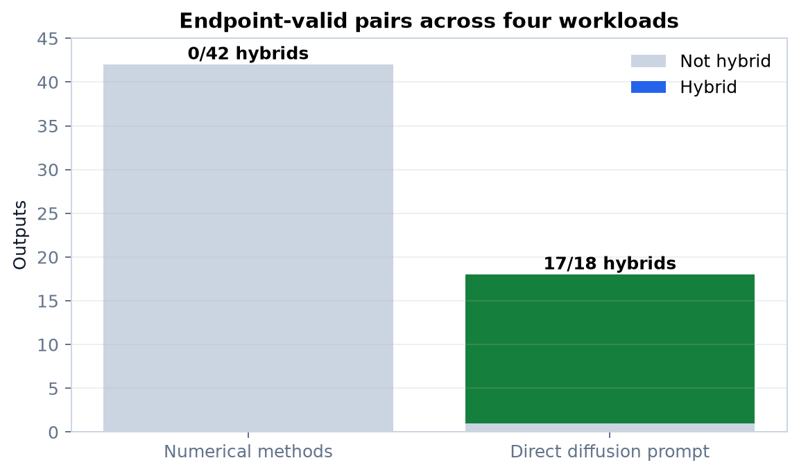
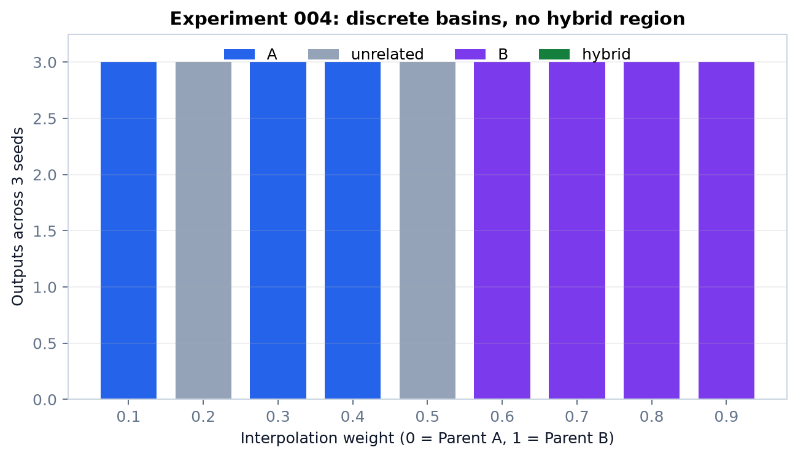
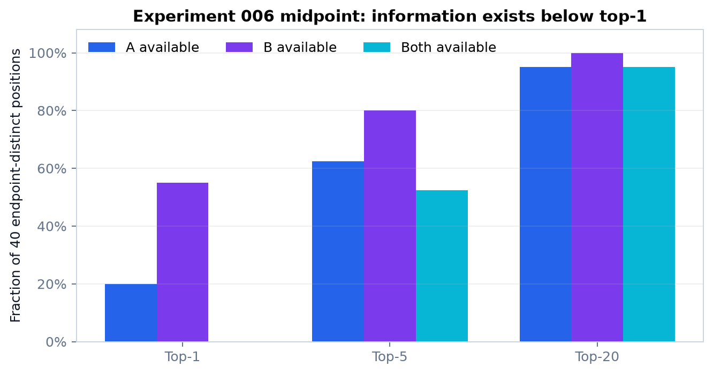
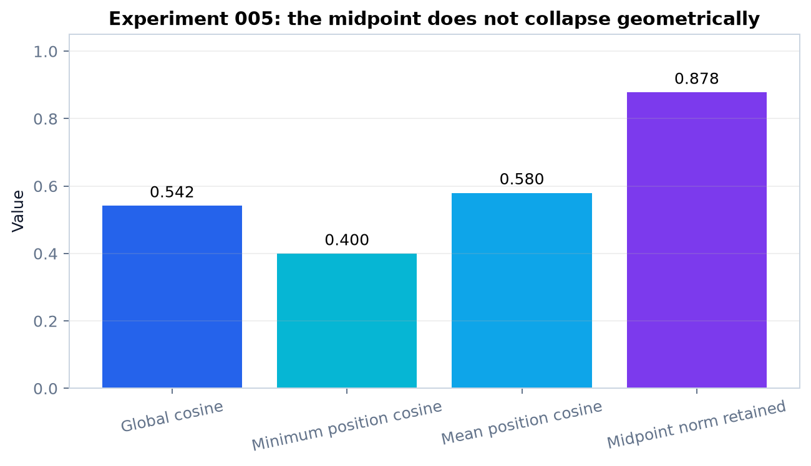

Can AI Average Two Optimization Ideas?
A controlled pilot study of DiffusionGemma representations for Project Darwin idea synthesis
Research question
Can a diffusion language model combine two code-optimization ideas by averaging or mixing its internal prompt-conditioned representations?
Success: a coherent idea that measurably retains both named parents.
Why it matters
Project Darwin explores program improvements. A useful numerical “idea space” could support controlled search for new optimizations—if nearby numerical points decode to related, valid ideas.
Method
Controls first: endpoints had to reproduce each parent. Then we tested weights, geometry, top-token alternatives, stochastic projection, per-step logit mixing, multiple pairs, and prompt specificity.
Evidence standard
Every number on this poster is calculated at build time from Experiments 001–012 raw JSON fields. Raw output text is read directly.
Strongest result
0/42 numerical hybrids vs 17/18 direct-prompt hybrids

The interpolation coordinate was not smooth

Experiment 004: endpoints passed, but 0/27 intermediate runs were hybrids.
Why? A projection bottleneck

The continuous midpoint retained alternatives below rank 1, while independent hard token selection produced a semantically broken patchwork.
What we ruled out

No negative position cosines and 87.8% norm retention make simple vector cancellation an unlikely explanation.
What succeeded
- DiffusionGemma decoded validated endpoints.
- Explicit prompts restored missing implementation details.
- Direct diffusion instructions composed both parents 17/18 strict times across endpoint-valid pairs.
- Raw manifests captured model, settings, seeds, runtime, and hashes.
Limitations
- Exploratory/pilot—not confirmatory.
- One model revision and public synthetic tasks.
- Lexical rules are necessary but not a full human evaluation.
- Internal-layer injection, KV-cache mixing, learned sequence-aware mixing, and preregistered confirmation are our later future-work ideas, not Sergiy’s explicit asks.
Conclusion
The tested final-state interpolation, hard projection, and linear output-logit mixing did not create a useful semantic bridge across sorting, matrix multiplication, sparse graph BFS, and image normalization. Bayesian optimization over this coordinate is not justified. Do not integrate this numerical mixer into Darwin yet; keep the successful direct-prompt baseline.
Our later future work: freeze a confirmatory protocol and test technically distinct sequence-aware mechanisms.
Experiment 011: 3/4 endpoint-valid pairs (matrix, graph, image); regex blocked. Experiment 012 then tested every passing pair.
Pilot evidence generated September 17–18, 2026. Build date: September 18, 2026. Full provenance: technical-report.html.